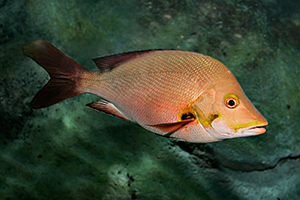
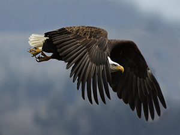
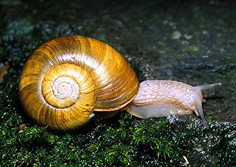
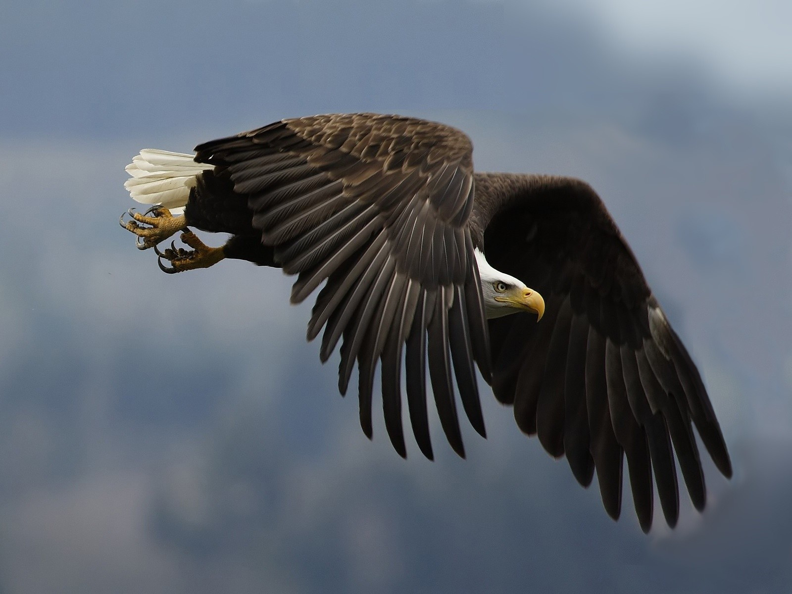
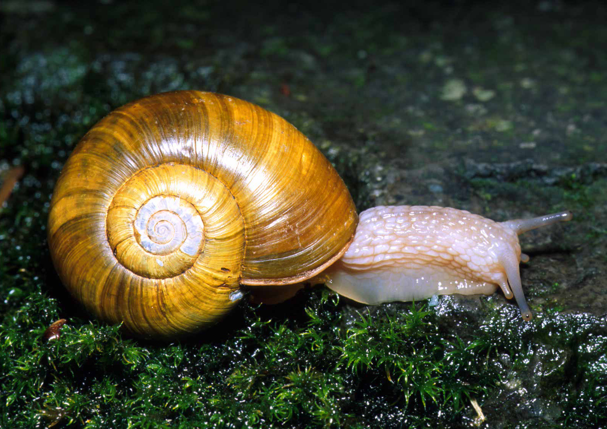

Makhluk hidup dalam Kingdom Animalia adalah organisme eukariota multicell, yaitu makhluk hidup ber-sel banyak yang memiliki membran inti. semua jenis Animalia merupakan heterotrof. Kerajaan ini biasa dikenal dengan dunia hewan, pada umumnya dikategorikan menjadi dua kelompok besar yakni hewan bertulang belakang (Vertebrata) dan tidak bertulang belakang (Avertebrata). Adapun ciri-ciri organisme Animalia, yaitu:
Merupakan organisme Eukariotik atau mempunyai membran inti.
Merupakan organisme Multicell atau tersusun atas banyak sel.
Bersifat Heterotrofi yang berarti tidak mampu membuat makanannya sendiri.
Tidak memiliki dinding sel, komponen terbesar sel hewan tersusun atas protein struktural kolagen.
Memiliki jaringan saraf dan jaringan otot sehingga bisa aktif bergerak (bersifat motil).
Hampir semuanya berkembang biak secara seksual, hanya beberapa yang mampu secara aseksual.
Tahukah kamu apakah itu yang dimaksud seksual dan aseksual?
Klik disini deh kalau kepo :D
Yang dimaksud dengan seksual adalah organisme (hewan) yang mampu berkembang biak dengan memerlukan sel jantan dan sel betina. Sedangkan aseksual adalah organisme (hewan) yang mampu berkembang biak dengan membelah sel sendiri.... WOW!! Nah nambah ilmu kan? dilanjutkan yuk mengenal lebih jauh apa sih itu organisme Archaebacteria dan Cyanobacteria. Silahkan pilih menu di sebelah kanan ya.
Vertebrata
Vertebrata adalah kelompok Animalia (hewan) bertulang belakang memiliki tubuh simetris bilateral dengan pembagian tubuh terdiri atas kepala, leher, badan, dan ekor. Meskipun demikian, ada pula anggota Vertebrata tidak berleher dan tidak berekor. Vertebrata terbagi lagi menjadi dua kelas yaitu; Pisces terdiri dari Agnatha (Cyclostomata), Chrondrichthyes dan Osteichthyes; dan Tetrapoda terdiri dari Amphibia, Reptilia, Aves dan Mamalia.
Berdasarkan kelasnya, Pisces (ikan) dapat dikelompokkan menjadi tiga sebagai berikut:
Agnatha (Cyclostomata),
Adalah jenis ikan tidak memiliki rahang, seperti Petromyzon Marinus (ikan lamprey laut), Eptatretus Goliath (ikan hag).
Chrondrichthyes,
Adalah jenis ikan yang memiliki tulang rawan di tubuhnya, seperti Squalus Acanthias (ikan hiu), Dasyatis (ikan pari).
Osteichthyes,
Adalah jenis ikan yang memiliki tulang sejati, seperti Chanos Chanos (ikan bandeng), Cyprinus Carpio (ikan mas).
Berdasarkan kelasnya, Tetrapoda (hewan darat) dapat dikelompokkan menjadi empat sebagai berikut:
Amphibia,
Adalah hewan bertulang belakang berdarah dingin, pada umumnya tubuhnya berlendir. Contohnya Rana Limnocharis (katak sawah), Bufo Melanostictus (bangkong).
Reptilia,
Adalah hewan bertulang belakang berdarah panas, pada umumnya memiliki kulit kasar atau bersisik. Contohnya Crocodylus Porosus (buaya), Chelonia Midas (penyu), Naja Sputatrik (ular cobra).
Aves,
Adalah hewan bertulang belakang yang tulangnya memiliki rongga, sebagian besar mampu terbang dan memiliki bulu. Contohnya Pavo Cristatus (burung merak), Columba Fasciata (merpati).
Mammalia,
Adalah hewan bertulang belakang yang memiliki kelenjar susu, semua jenis mamalia berkembang biak dengan melahirkan (vivipar). Contohnya Balaenoptera Musculus (ikan paus), Genitif Elephantis (gajah).
Avertebrata
Avertebrata/Invertebrata adalah kelompok Animalia (hewan) yang mempunyai ciri-ciri tidak bertulang belakang, susunan syaraf terletak di bagian ventral (perut) di bawah saluran pencernaan, umumnya memiliki rangka luar (eksoskeleton) dan otak tidak dilindungi oleh tengkorak.
Berdasarkan kelasnya, Avertebrata dapat dikelompokkan menjadi delapan sebagai berikut:
Porifera (Hewan Berpori),
Porifera (Latin, porus = pori dan fer = pembawa) adalah jenis hewan yang makanannya adalah bakteri dan plankton. Makanan yang masuk ke tubuhnya dalam bentuk cairan sehingga porifera disebut juga sebagai pemakan cairan. Habitat porifera umumnya di laut, contohnya Sycon, Clathrina, Euspongia dan Spongia.
Coelenterata (Hewan Berongga), Coelenterata (Latin, coelenteron = rongga) adalah jenis hewan yang memiliki rongga tubuh. Rongga tubuh tersebut berfungsi sebagai alat pencernaan (gastrovaskuler). Mereka disebut juga Cnidaria (Latin, cnido = penyengat) karena sesuai dengan cirinya yang memiliki sel penyengat, contohnya Koral, Polip, Anemone dan Ubur-ubur.
Platyhelminthes (Cacing Pipih), Platyhelminthes adalah binatang sejenis cacing pipih dengan simetri tubuh tanpa peredaran darah dengan pusat syaraf yang berpasangan. Cacing pipih kebanyakan sebagai biang timbulnya penyakit karena hidup sebagai parasit pada binatang / hewan atau manusia, contohnya Planaria, Taenia Solium (cacing pita babi).
Arthropoda (Hewan Berbuku-Buku), Arthropoda adalah hewan dengan kaki beruas-ruas dengan sistem saraf tali dan organ tubuh telah berkembang dengan baik. Tubuh artropoda terbagi atas segmen-segmen yang berbeda dengan sistem peredaran darah terbuka. Contohnya kelompok Insecta (serangga), Crustaceae (udang-udangan), Arachnoidea (laba-laba) dan Myriapoda (lipan).
Echinodermata (Hewan Berkulit Duri), Echinodermata adalah binatang berkulit duri yang hidup di wilayah laut dengan jumlah lengan lima buah bersimetris tubuh simetris radial. Beberapa organ tubuh echinodermata sudah berkembang dengan baik. Tubuh ditutupi duri yang tersusun atas zat kapur, memiliki daya regenerasi yang tinggi, hidup di laut, berkembang biak secara kawin yang pembuahannya diluar tubuh. Contohnya Asteroidea (bintang laut), Echinoidea (landak laut), Holothuroidea (teripang)
Nemathelminthes (Cacing Gilig), Nemathelminthes atau cacing gilik / gilig adalah hewan yang memiliki tubuh simetris bilateral dengan saluran pencernaan yang baik namun tidak ada sistem peredaran darah., contohnya Ascaris Lumbricoides (cacing perut), Oxyuris Vermicularis (cacing kremi), dan Ancylostoma Duodenale (cacing tambang).
Annelida (Cacing Gelang), Annelida adalah cacing gelang dengan tubuh yang terdiri atas segmen-segmen dengan berbagai sistem organ tubuh yang baik dengan sistem peredaran darah tertutup. Annelida sebagian besar memiliki dua kelamin sekaligus dalam satu tubuh atau hermafrodit, contohnya Lumbricus Terrestris (cacing tanah), Hirudo Medicinalis (lintah), Haemodipsa (pacet).
Mollusca (Hewan Bertubuh Lunak), Mollusca adalah hewan bertubuh lunak tanpa segmen dengan tubuh yang lunak dan biasanya memiliki pelindung tubuh yang berbentuk cangkang atau cangkok yang terbuat dari zat kapur untuk perlindungan diri dari serangan predator dan gangguan lainnya. Hidup di air laut, air tawar dan di darat, contohnya Cumi-Cumi, Sotong, Siput Darat, Siput Laut dan Chiton.
Gallery Foto & Video
Klik gambar dibawah ini untuk membaca deskripsi lebih lanjut

Campechanus
Adalah salah satu Animalia kelas Vertebrata jenis Pisces. Dalam foto diatas lebih dikenal dengan ikan Kakap termasuk Osteichthyes.

Nisaetus
Adalah salah satu Animalia kelas Vertebrata jenis Aves. Dalam foto diatas lebih dikenal dengan burung Elang.

Achatina Fulica
Adalah salah satu Animalia kelas Avertebrata jenis Mollusca. Dalam foto diatas lebih dikenal dengan hewan Siput atau Bekicot.
Actiniara
Adalah salah satu Animalia kelas Avertebrata jenis Coelenterata. Dalam foto diatas lebih dikenal dengan Anemon Laut.
Campechanus
Dalam gambar ini adalah ikan Kakap yang termasuk Osteichthyes atau jenis bertulang belakang sejati. Pada umumnya ikan air tawar dan air payau termasuk dalam jenis ini.
Nisaetus
Dalam gambar ini adalah burung Elang yang termasuk Aves atau jenis unggas. Pada umumnya jenis unggas mampu terbang menggunakan kaki sebagai lengan sayap dan berbulu.

Achatina Fulica
Ini adalah Siput/Bekicot yang merupakan salah satu hewan Avertebrata jenis Mollusca, biasanya jenis ini memiliki ciri-ciri tubuh elastis yang dilindungi oleh cangkang dan berlendir.

Actiniara
Dalam gambar ini adalah Anemon Laut, pada awalnya peneliti mengira bahwa hewan ini termasuk tumbuhan laut. Kenyataannya hewan ini memiliki tubuh berongga yang berperan sebagai mulut penghisap. Contoh lainnya adalah ubur-ubur.